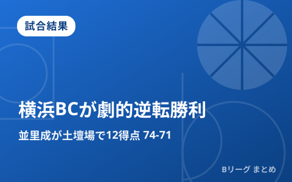

横浜BCが宇都宮に劇的逆転勝利 並里成が土壇場で12得点、Bプレミア初白星

9月27日、日環アリーナ栃木で行われたB.PREMIER開幕週の宇都宮ブレックス対横浜ビー・コルセアーズは、前日に敗れた横浜BCが第4クォーター終盤の土壇場で逆転し、74-71で勝利しました。並里成が試合終盤に立て続けに得点を重ね、新リーグでの記念すべき初白星を手繰り寄せています。同日は名古屋ダイヤモンドドルフィンズが川崎ブレイブサンダースを90-78で下して開幕2連勝を飾るなど、各地で第2週の試合が行われました。
並里成が第4Q終盤に連続得点、74-71の逆転勝利
前日の宇都宮戦（88-78で宇都宮が勝利）から一夜明けたこのカードは、終盤までもつれる接戦となりました。第4クオーター残り1分57秒、横浜BCの並里成がジャンプショットを沈めて2点差に迫ると、残り49秒にはファストブレイクから佐藤卓磨の同点レイアップをアシストし70-70の同点に。残り36秒にエドワーズのフリースローで宇都宮が1点勝ち越したものの、その直後の残り23秒、並里が再びジャンプショットを決めて72-71と土壇場で逆転に成功。最後はフリースロー2本を確実に沈め、74-71で試合を締めくくりました。
| 選手 | スタッツ |
|---|---|
| 並里成（横浜BC） | 12得点4アシスト3リバウンド（第4Qのみ8得点） |
名古屋Dが第3Qのランで突き放し開幕2連勝、川崎は連敗スタート
とどろきアリーナで行われた川崎ブレイブサンダース対名古屋ダイヤモンドドルフィンズは、第3クオーター開始早々に流れが変わりました。スコット・エサトン、齋藤拓実、ルーサー、アーロン・ヘンリーが連続で得点し13-0のランを決めた名古屋Dが一気に主導権を握り、90-78で勝利。前日の川崎戦に続く連勝で開幕2連勝としました。モハメド・アリ・アブドゥル・ラフマンを欠いた川崎は、ジェイデン・リディが23得点7リバウンド、アレックス・カークが13得点13リバウンドと踏ん張りましたが、桶谷大ヘッドコーチ体制での連敗発進となりました。
他会場も第2週の試合が続々、三遠・広島・三河・秋田・神戸が白星
この日は全国各地でB.PREMIERの試合が行われ、三遠ネオフェニックスが茨城ロボッツを81-75で下して2勝目、広島ドラゴンフライズも佐賀バルーナーズに89-61で勝利し2連勝としました。シーホース三河は北海道クレインズに78-77と接戦を制して1勝1敗、秋田ノーザンハピネッツは仙台89ERSに、島根から本拠地を移した神戸ストークスは大阪エヴェッサにそれぞれ勝利しています。開幕直後のため各クラブとも一戦一戦の重みが大きく、新リーグの勢力図を占ううえで序盤戦の結果に注目が集まっています。
Q. 同じカードを連日で対戦するのはなぜ？
A. B.PREMIERでは同一カードを土日など連日で2試合行う変則ダブルヘッダー方式が多く採用されています。今回の宇都宮対横浜BCも、前日は宇都宮が勝利、翌日は横浜BCが雪辱を果たす形となりました。
出典：バスケットボールキング「横浜BCが敵地で宇都宮に逆転勝利…並里成が終盤に大仕事、記念すべきBプレミア初白星を掴む」／バスケットボールキング「第3Qに抜け出した名古屋Dが開幕2連勝…川崎は桶谷大HC体制連敗スタート」／共同通信「バスケ、名古屋Ｄや三遠が２連勝 Ｂリーグプレミア」ほか
https://news.yahoo.co.jp/articles/dc2282dd188f490801fd0c8e757d24f976892a9f
https://news.yahoo.co.jp/articles/aa5e7e4794d32ecf9a6f56eb76a1931b5c2afa61
https://www.daily.co.jp/general/2026/09/27/0020866784.shtml